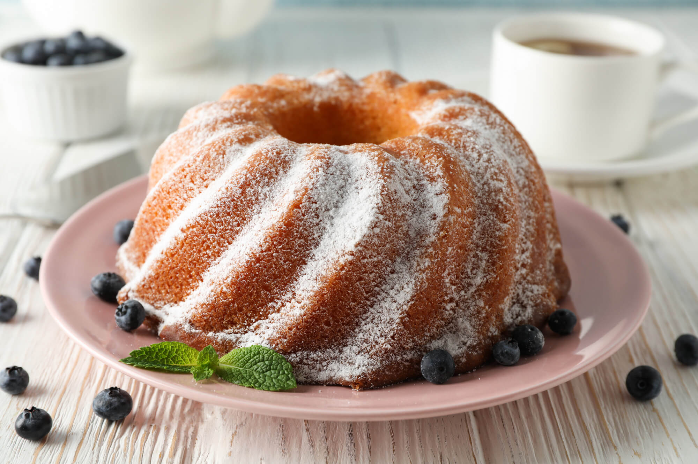

Dicas de Cozinha
Aprenda dicas incríveis para deixar suas receitas ainda mais saborosas!
-
Como deixar o bolo mais fofinho:
Recomendo o uso de maizena, ajuda bastante na texturização. Também fazer clara de neve, separando as gemas.
-
Como chegar no ponto de brigadeiro:

O ponto do brigadeiro para enrolar é o mais fácil. Misture leite condensado e chocolate em pó antes de ir ao fogo. Cozinhe em fogo médio, mexendo sempre, até desgrudar do fundo da panela. Adicione creme de leite, se desejar, e continue cozinhando até atingir o ponto novamente.
-
Como deixar o sorvete cremoso:

Use ingredientes frescos e de qualidade. Adicione creme de leite, leite de coco ou gemas para garantir a cremosidade. Experimente incluir frutas, biscoitos e caldas para incrementar o sabor.